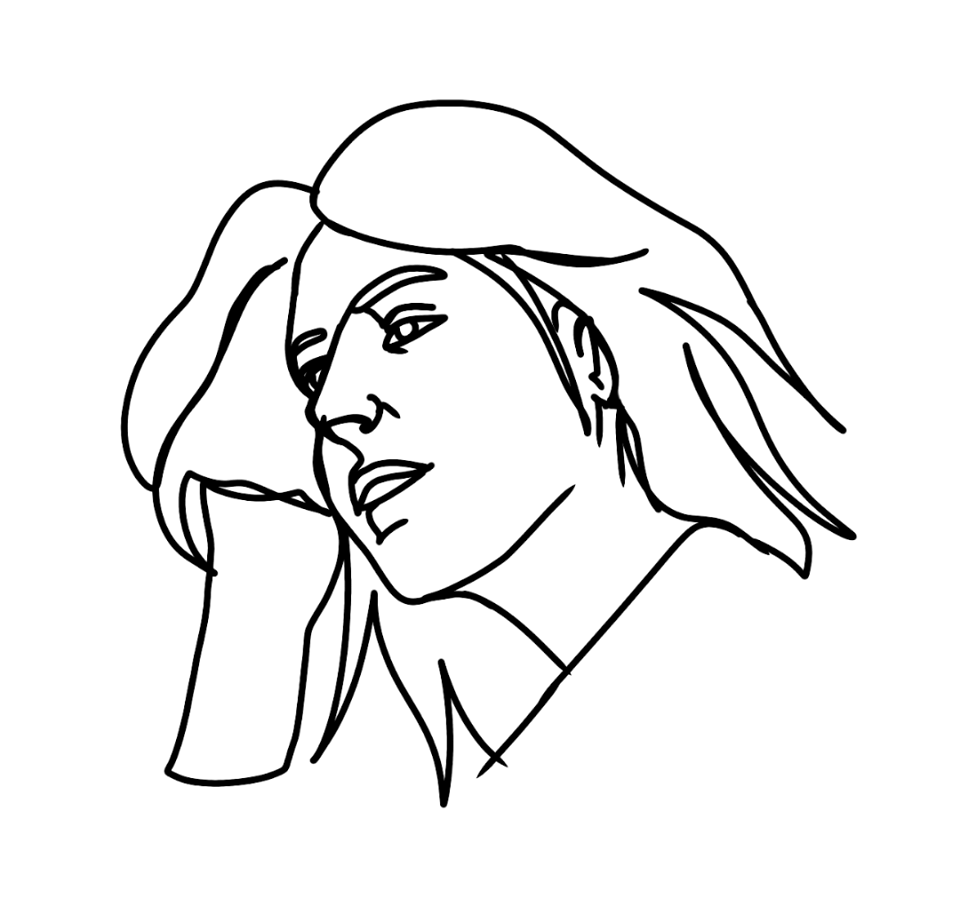
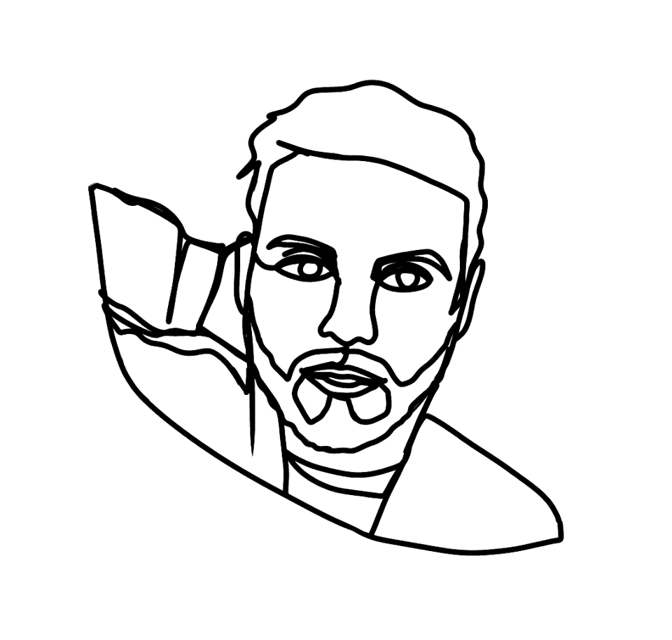
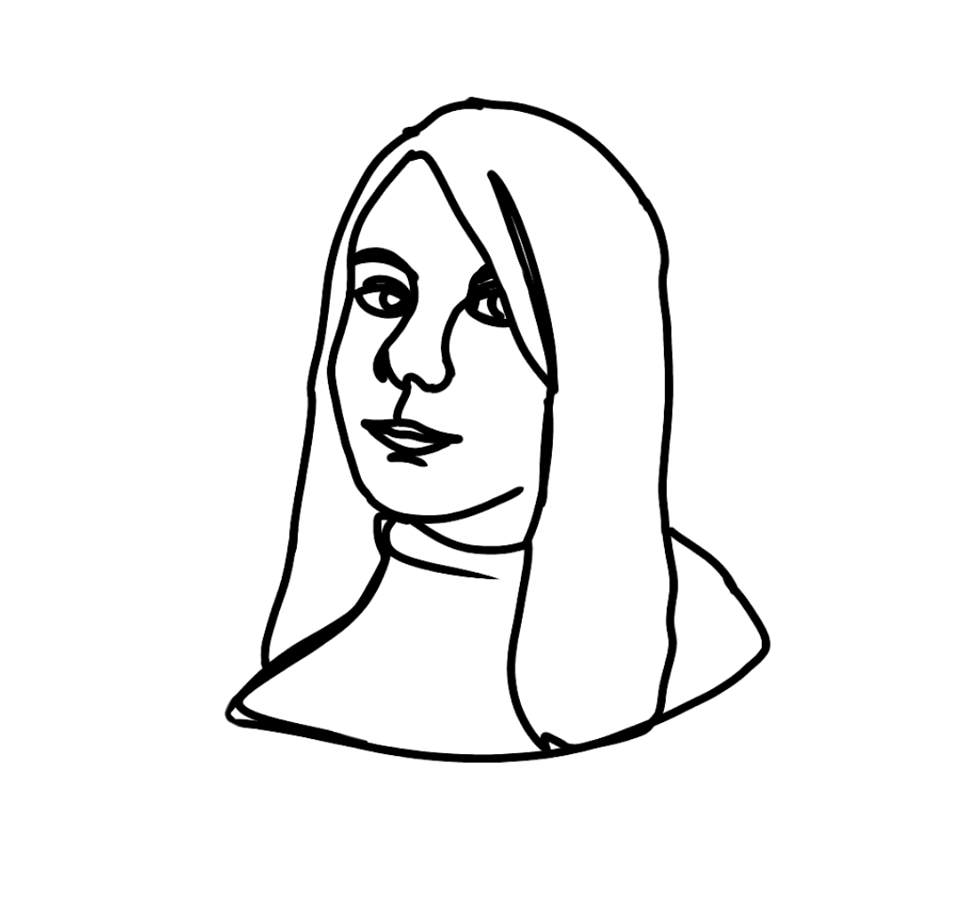

Group Project
- 01
- 02
- 03
- 04
Scrap Stereotypes; Team Members

Hello, my name's Ingrida and I'm one of the members in Scrap Steretoypes. My main job in this project was to photograph the students you see in our quiz. After photographing them, I edited the images in Photoshop. I was in charge of arranging dates and times to meet students as well as emailing students who would be interested in participating in our project. In addition to that, I helped book our Photography Studio and equipment so we would be able to take the photographs. Along with this, I helped design and create this website.
Name Ingrida
Main Photographer
Additional Website Designer
Main Photographer
Additional Website Designer
Hello, my name's Ingrida and I'm one of the members in Scrap Steretoypes. My main job in this project was to photograph the students you see in our quiz. After photographing them, I edited the images in Photoshop. I was in charge of arranging dates and times to meet students as well as emailing students who would be interested in participating in our project. In addition to that, I helped book our Photography Studio and equipment so we would be able to take the photographs. Along with this, I helped design and create this website.

Hi, I'm Dylan and I'm one of the members in Scrap Stereotypes. My main focus was working on our website. Due to the COVID-19 breakout and college being closed we had to change our idea from a physical exhibition to online, that's where we decided to create a website. My main job was to create an interactive game to display, this is where I created the quiz found on this page. Alongside Ingrida, I helped design and create this website.
Name Dylan
Main Website Designer
Additional Game Designer
Main Website Designer
Additional Game Designer
Hi, I'm Dylan and I'm one of the members in Scrap Stereotypes. My main focus was working on our website. Due to the COVID-19 breakout and college being closed we had to change our idea from a physical exhibition to online, that's where we decided to create a website. My main job was to create an interactive game to display, this is where I created the quiz found on this page. Alongside Ingrida, I helped design and create this website.

Hi guys! My name's Kayleigh, and I'm one of the members in Scrap Stereotypes. I'm the illustrator for our group project, any images you see on our site - I drew! Alongside illustration, I was also a photographer. I took headshots for the students we photographed. I also helped Ingrida with planning and booking the Photography Studio and equipment.
Name Kayleigh
Main Illustrator
Additional Photographer
Main Illustrator
Additional Photographer
Hi guys! My name's Kayleigh, and I'm one of the members in Scrap Stereotypes. I'm the illustrator for our group project, any images you see on our site - I drew! Alongside illustration, I was also a photographer. I took headshots for the students we photographed. I also helped Ingrida with planning and booking the Photography Studio and equipment.